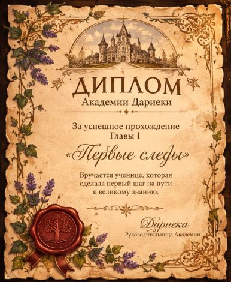

Ученица
Новичок леса
Опыт
0
Находки
0

Ты стоишь перед старыми коваными воротами. За ними — тропинка в лес и старый замок академии.
«Входящий, оставь здесь свое имя. Оно будет записано в Лесной архив».
Добро пожаловать, .
В знак того, что ты теперь часть академии, прими свой первый предмет:

Старинный пропуск с гербом академии.
Твой путь начинается здесь
Дариека: «Добро пожаловать, ! Я открываю для тебя Старую оранжерею».

Травницы знают: растения не умеют говорить, но могут многое рассказать внимательному исследователю.
Рассмотри любой опавший листик или комнатное растение, если взрослые разрешат. Обрати внимание на его форму, края, цвет и прожилки.
У каждого растения есть свои особенности. Даже два листочка с одного дерева могут немного отличаться друг от друга!
Главное правило исследовательницы: мы не пробуем незнакомые растения на вкус, не срываем их и не трогаем без разрешения.
Дариэка: «Как должна вести себя настоящая исследовательница?»
Дариэка улыбается: «Ты запомнила первое правило!»
Найден между страницами старого учебника.
Из старой книги выпал листок. На нем цифры:
12 – 10 – 19 – 20
«Это не цифры. Это буквы. Считай от начала алфавита».
«Слово "ЛИСТ" было ключевым», — говорит Дариэка.
Тяжелый бронзовый ключ с биркой «Не для дверей».
Дариэка: «Раз ты разгадала шифр, пришло время открыть следующую локацию. Этот ключ с биркой «Не для дверей» явно ведет в Библиотеку. Там стоят старые сундуки. Иди и посмотри, что внутри».
Ты проходишь мимо высоких стеллажей. В самом углу стоит старый сундук, весь покрытый пылью. На его замке — точно такое же отверстие, как на твоем ключе.
Ты вставляешь ключ... Раздается тихий щелчок!
Внутри сундука лежит странное письмо, перевязанное выцветшей лентой.
Пожелтевший лист с непонятными символами. Кажется, оно написано очень давно.
Когда ты убрала письмо, из-за полки выкатился маленький круглый комочек мха. У него блестящие глазки-бусинки.
Дариэка: «О, это же Моховичок! Он живет здесь очень давно и любит прятаться среди старых книг. Кажется, ты ему понравилась. Он хочет пойти с тобой».
Придумай имя своему новому лесному спутнику:
Дариэка бережно открывает старинную папку.
Дариэка: «Ты прошла первые тропы, разгадала тайны архива и нашла верного лесного спутника. Я с радостью вручаю тебе этот диплом. Это только начало твоего пути!»

Награда за завершение главы: +50 опыта
Маленький хранитель тихих уголков библиотеки. Любит мягкий мох, старые книги и спокойные прогулки по лесу.
Моховик всегда рядом. Ему не нужен ежедневный уход, и он никогда не исчезнет из твоей коллекции.
Пока у тебя нет питомцев. Возможно, один из лесных жителей скоро захочет с тобой познакомиться.
Диплом за завершение главы I «Первые следы».
За узкой дверью лестница ведет на самую крышу академии. Здесь пахнет деревом, сухими травами и старыми книгами.
Вдоль стен стоят сундуки и коробки. Сквозь пыльное окно льется мягкий свет. Кажется, это место давно ждало новую хранительницу.
Дариэка: «Добро пожаловать на чердак. Здесь хранятся вещи прежних исследовательниц. Присмотрись внимательно — возможно, ты найдешь первую реликвию этого места».